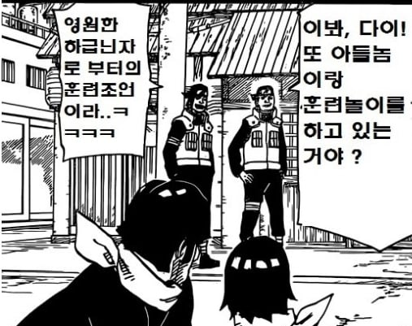
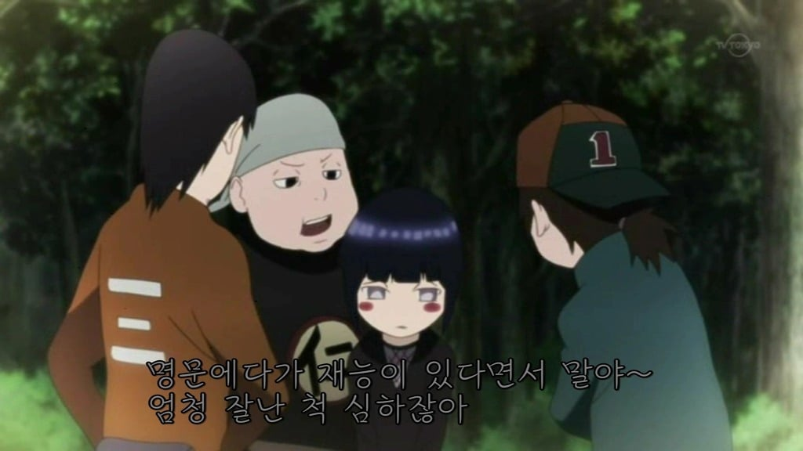
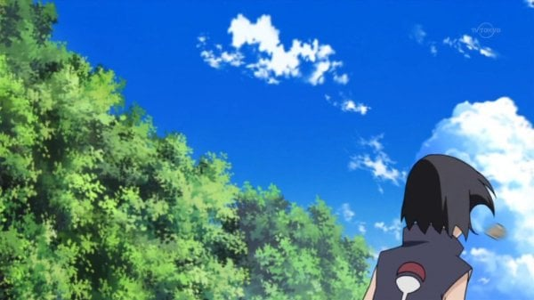
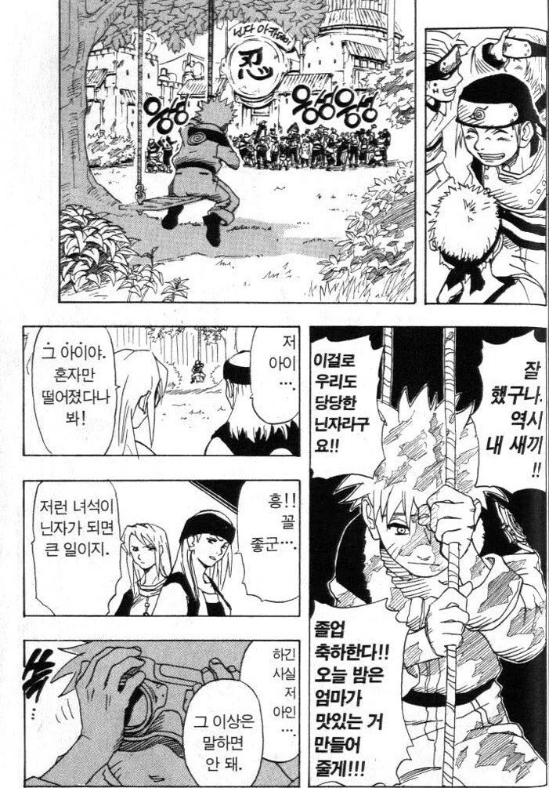

카카시 아빠
카게급 강자였지만 임무 포기하고 동료 살렸다고
이지메 당해 자살

가이 아빠
진급 못한다고 이지메
우치하 일족
선조가 탈주해서 사고쳤다고
마을 단위 이지메 당함
나루토 엄마
머리 빨갛다고 이지메

히나타
명문가라고 이지메
재능 없다고 가족한테도 이지메
이루카 센세
고아라고 이지메

이타치
너무 잘나서 이지메

나루토
구미 봉인 당한 고아 새끼라 이지메
사쿠라
앞머리 짱구라 이지메
쵸비
뚱뚱 하다고 이지메
작가가 이지메 없으면 내용 전개를 못하는듯
앞과 뒤가 다른 졸렬잎...